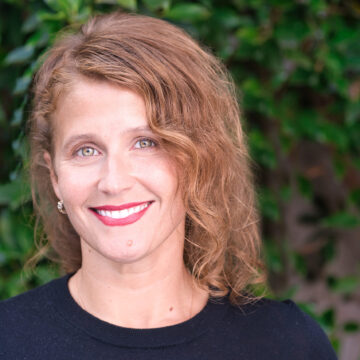
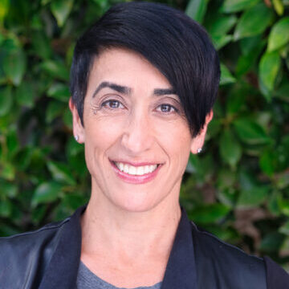
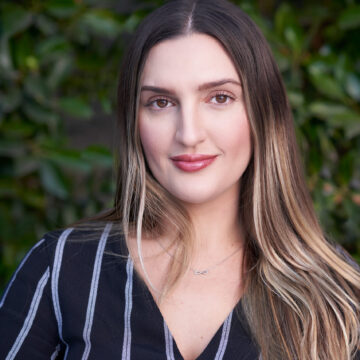
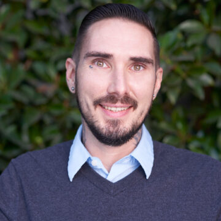
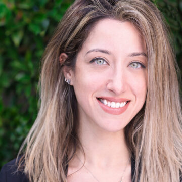
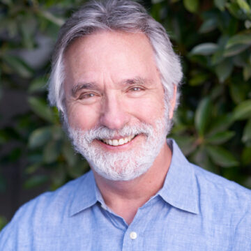
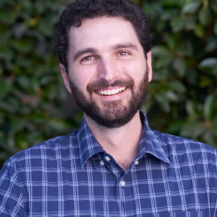

Discover yourself and your path to psychological and emotional balance
TEAM
Overland IOP recognizes the importance of a holistic approach to treatment. We employ a psychiatrist to be available to our clients to answer any questions and ensure our client’s health and care.
-

Dr. Megan Kain, PsyD Clinical Director
FEELINGS ARE NOT FACTS
Dr. Kain’s current role as a licensed clinical psychologist is a function of her cumulative life experiences. Her professional passion resides in working with various manifestations of systemic trauma; high-need, clinically complex populations that exist at the intersection of legal and mental health issues. Dr. Kain attended the University of Michigan for her undergraduate degree in Psychology, and received her Masters and PsyD in Clinical Psychology through Antioch University Santa Barbara. Drawing upon her education and training in these arenas, Megan has had stimulating clinical experiences that encompass a wide spectrum of populations: outpatient level of care, in-patient psychiatric hospitalization, in-home therapy with victims of crime, consulting work to develop and enhance clinical programming at in-patient level of care, working with the Department of Child and Family Services conducting psychological assessments of child survivors of abuse as well as infants exposed in utero to illicit substances. Dr. Kain has had the distinct honor of working with nonprofits such as the Center for Health Justice to increase equal access of inmates in the Los Angeles County Jail system to quality mental health services as well as medical services. Most recently, she served as staff psychologist with the California Department of Rehabilitation and Corrections conducting crisis evaluation, mental health assessments, and individual therapy with men at the reception phase of incarceration. Currently, Dr. Kain serves as Clinical Director at Trauma and Wellness Center, an outpatient mental health clinic in Los Angeles. Before her career as a Clinical Psychologist, Dr. Kain worked as a contemporary dancer; expression through arts is vital to her. She blends her life experience with the knowledge from her doctorate to help others experience the power of the mind and body connection. She is a lifelong advocate for progressive causes and passionate about LGBTQ rights. Dr. Kain considers her role as Clinical Director with Overland an exciting platform to apply the experiential wisdom and tools accrued and to be able to contribute to a treatment team approach that fully meets the unique needs of our population, and to overall, stoke hope.
-

Dr. Rashin D’Angelo, PhD Clinical Consultant
RECOVERY IS A JOURNEY ...NOT A DESTINATION
Rashin D’Angelo, PhD, is a Licensed Clinical Psychologist (PSY27365) with a specialization in addiction, trauma, mood disorders (depression, anxiety, bipolar disorder) and co-occurring disorders. Although her theoretical orientation is largely psychodynamic, emphasizing emotional experience as key to personality functioning, she uses an integrative approach with clients, incorporating Jungian and analytical psychology, cognitive behavior therapy, trauma-informed practices, and mind-body techniques to address the individual needs of each client. Dr. D’Angelo has completed a PhD in Clinical Psychology with an emphasis in depth psychology at Pacifica Graduate Institute (2013), and earned an MA in Spiritual Psychology at University of Santa Monica (2009). Her area of research includes using mind-body approaches in treatment of all addictive disorders. The focus of her clinical experience has been in private practice, community mental health, dual diagnosis treatment centers, in-patient psychiatric hospital, and forensic settings. In her work with clients and families, she uses a strengths-based approach, empowering individuals to focus on their strengths, in order to discover new and more useful patterns of behavior. Dr. D’Angelo has numerous years of experience in management and leadership and is the Executive Director of Trauma and Wellness Center, a non-profit organization in Los Angeles dedicated to treatment of psychiatric and addictive disorders for the underserved community. She has extensive experience with managing and structuring clinical programs that best meet the needs of clients. Her private practice includes multiple offices throughout the LA region focused on mental health treatment of adults, adolescents, and children. Her work includes clinical supervision of master’s level therapists and psychological assistants at the post-doctoral level with various specializations. She serves as adjunct faculty in the forensic psychology program at The Chicago School for Professional Psychology (TCSPP), and in the Clinical Psychology program at National University.
-

Tara Micich Operations Manager
WILLINGNESS IS THE KEY
Tara has worked in the behavioral healthcare field since 2016. She has overcome her own fight with addiction and has been dedicated to helping others ever since. With her own understanding of what our clients are going through, Tara brings a depth of passion to the team. Outside of work, Tara attends Santa Monica College in hopes of becoming a registered nurse.
-

Coleman (CJ) McClellan Case Manager/Group Facilitator
NOTHING CHANGES IF NOTHING CHANGES
CJ has worked in the field of substance use and mental health treatment since 2016. He received his education in Alcohol and Drug Counseling from Intercoast College and is currently an applicant for certification through the California Consortium of Addiction Programs and Professionals. With over 8 years of personal experience in recovery, CJ brings a compassionate and empathetic approach to helping clients achieve their goals. As a counselor and group facilitator, CJ's goal is to empower clients to succeed in all areas of life. He believes in a collaborative approach to addressing maladaptive behavior patterns and developing effective coping strategies for the future.
-

Greysi Vizcardo, MA Therapist
UNLOCKING THE POSSIBILITIES OF A BETTER TOMORROW
Greysi received her Bachelor’s in Psychology from CSU Long Beach and her Master’s in Clinical Psychology from Alliant International University. She pursued a Doctorate in Clinical Psychology which she is near to completing. Greysi has had the opportunity to train and offer therapeutic services at the Ronald McDonald House, at Children’s Hospital Los Angeles. She has also trained and provided services at Didi Hirsch Mental Health Services, a leading provider of mental health, substance use, and suicide prevention. In these locations she provided therapy and assessments in English and Spanish, and worked with diverse individuals, couples, and families including veterans, LGBTQA+, geriatrics, and people with disabilities. Her experience includes treating Anxiety, Depression, PTSD, BPD, Substance Use/Comorbidity, Grief and Loss, Couples Issues, and Parenting Support. Additionally, she facilitates therapy groups where the goal is to provide psychoeducation, skill development, and processing. Greysi’s theoretical approach is a combination of Family Systems, which helps us understand our past and Cognitive Behavioral Therapy, which helps us work on our present and future. She also implements skills from ACT, Mindfulness, Gestalt, Humanistic, and Positive Psychology.
-

Eden Rambod, MS Case Manager/Group Facilitator
HOW DOES IT WORK? IT WORKS JUST FINE
Eden Rambod is a Case Manager and Group Facilitator at Overland IOP. With a Masters degree in Clinical Psychology, and previous experience in treatment and behavioral interventions, she aims to foster personal and spiritual growth through guidance and acceptance. Her energy promotes self-awareness and inspires change.
-

Tom Szabadi, MFT Therapist/Group Facilitato
CHANGE IS A PROCESS, NOT AN EVENT
Tom is an Associate Marriage and Family Therapist and has worked with chemically dependent individuals since 2016. Tom is trained in Eye Movement Desensitization and Reprocessing (EMDR) which can assist with resolving lingering effects of past traumatic memories. It can also lesson the hold of negativity and limiting beliefs and move you to a much healthier self-concept and higher self-esteem. Tom enjoys street photography, long distance running and tennis. He lives in Santa Monica, with his wife, two dogs and a cat
-

Mason Wright, LMFT Therapist
DON'T QUIT BEFORE THE MIRACLE HAPPENS
Mason Wright is a Licensed Marriage and Family Therapist and a Los Angeles native. He received his Masters of Science in Clinical Psychology from California State University, Fullerton. He wrote his Master’s thesis on patterns of alcohol use and high risk behavior in young adults. Mason has been involved with community-based and private mental health organizations in Southern California since 2009. Mason creates an emotionally supportive environment that emphasizes personal responsibility and encourages growth toward a happier and more fulfilling life. He uses a combination of therapeutic techniques including Cognitive-Behavioral (CBT), Psychodynamic, Existential, Motivational Interviewing, and Mindfulness-Based (MBCT) to assist those struggling with anxiety, depression, insecurity, stress, fear, pain, and relational issues. He also has extensive experience working with individuals and families whose lives have been affected by substance abuse. Mason works collaboratively with clients, meeting them where they are in their journey to find connection, belonging, and meaning.